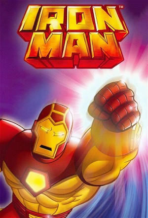

Iron Man (1994)
ActionAdventureAnimationScience Fiction
| Year | 1994 |
|---|---|
| Rating | TV-Y7 |
| Status | Completed |
| Seasons | 3 |
| Episodes | 52 |
| Genre | Action, Adventure, Animation, Science Fiction |
Iron Man, also known as Iron Man: The Animated Series, is an American animated television series based on Marvel Comics' superhero Iron Man. The series aired from 1994 to 1996 in syndication as part of The Marvel Action Hour, which packaged Iron Man with another animated series based on Marvel properties, the Fantastic Four, with one half-hour episode from each series airing back-to-back. The show was backed by a toy line that featured many armor variants.
Episodes
Specials
| # | Title | Air Date | Synopsis |
|---|---|---|---|
| 1 | Marvel Action Hour Opening (Iron Man) | 1994-09-17 | |
| 2 | Marvel Action Hour Stan Lee Intro Episode 1 | 1994-09-17 | |
| 3 | Marvel Action Hour Stan Lee Intro Episode 2 | 1994-10-01 | |
| 4 | Marvel Action Hour Stan Lee Intro Episode 3 | 1994-10-08 | |
| 5 | Marvel Action Hour Stan Lee Intro Episode 4 | 1994-10-15 | |
| 6 | Marvel Action Hour Stan Lee Intro Episode 5 | — | |
| 7 | Marvel Action Hour Stan Lee Intro Episode 6 | — | |
| 8 | Marvel Action Hour Stan Lee Intro Episode 7 | — | |
| 9 | Marvel Action Hour Stan Lee Intro Episode 8 | — | |
| 10 | Marvel Action Hour Stan Lee Intro Episode 9 | — | |
| 11 | Marvel Action Hour Stan Lee Intro Episode 10 | — | |
| 12 | Marvel Action Hour Stan Lee Intro Episode 11 | — | |
| 13 | Marvel Action Hour Stan Lee Intro Episode 12 | — |
Season 1
| # | Title | Air Date | Synopsis |
|---|---|---|---|
| 1 | And the Sea Shall Give Up Its Dead | 1994-09-24 | The Mandarin turns the crew of a sunken Russian submarine into zombies, pitting them against Iron Man and Force Works. |
| 2 | Rejoice! I Am Ultimo, Thy Deliverer | 1994-10-01 | Iron Man has to contend with the infamous Ultimo, who was brought back on-line thanks to Mandarin and Modok. |
| 3 | Data in, Chaos Out | 1994-10-08 | The Mandarin and Justin Hammer have taken control of Stark satellites, using them to inflict a disaster. Meanwhile, Modok turns Jim Rhodes against his friends, leading to Iron Man battling War Machine. |
| 4 | Silence My Companion, Death My Destination | 1994-10-15 | Iron Man races to save Julia's kidnapped daughter. |
| 5 | The Grim Reaper Wears a Teflon Coat | 1994-10-22 | The Mandarin steals the Grim Reaper, a new military jet developed by Stark. |
| 6 | Enemy Without, Enemy Within | 1994-10-29 | Force Works race to save a model that was kidnapped by the Mandarin's henchmen. But Modok has a more than passing interest in her. |
| 7 | The Origin of the Mandarin | 1994-11-05 | A video diary reveals how the Mandarin acquired his powerful rings. |
| 8 | The Defection of Hawkeye | 1994-11-12 | Incriminating evidence suggests Hawkeye has betrayed Force Works, but he protests that he is innocent. |
| 9 | Iron Man to the Second Power (1) | 1994-11-19 | Modak creates a double of Iron Man. The double is sent to steal the only antidote to the infamous Dark Water Fever. |
| 10 | Iron Man to the Second Power (2) | 1994-11-26 | Iron Man goes head to head with his evil double and must also face the Living Laser and the Grey Gargoyle. |
| 11 | The Origin of Iron Man (1) | 1994-12-03 | A powerless Iron Man is trapped in the Chinese arctic. To keep warm, Tony views his past memories, reliving the origin of his mighty armor. |
| 12 | The Origin of Iron Man (2) | 1994-12-10 | As his armor continues to recharge, Tony sees more of his past. Meanwhile, Force Works are on their way to rescue him, but they'll have to be faster than the Mandarin's henchmen. |
| 13 | The Wedding of Iron Man | 1994-12-17 | The Mandarin and Justin Hammer learn that Tony Stark is Iron Man after reviewing several past battles. |
Season 2
| # | Title | Air Date | Synopsis |
|---|---|---|---|
| 1 | The Beast Within | 1995-09-23 | Tony fakes his death after several attempts on his life, which seemed connected to a larger plan involving the abduction of four industrialists by the Mandarin. Tony returns in a more powerful suit of armor and has to te |
| 2 | Fire and Rain | 1995-09-30 | Jim nearly drowns in his War Machine armor, making it hard for him to put the armor back on. Iron Man, meanwhile, discovers the son of a former Stark employee is seeking revenge as Firebrand. |
| 3 | Cell of Iron | 1995-10-07 | A.I.M. takes credit for a deadly terrorist attack, but Iron Man finds the source to be a powerful space station named the Star Well. A kind man, Arthur Dearborn, lives on the station, which is guarded by the mighty Suntu |
| 4 | Not Far From the Tree | 1995-10-14 | An intercepted A.I.M. signal leads Tony to find his thought dead father, Walter Stark. While he deals with painful memories, Tony also discovers what really happened to his father and why S.H.I.E.L.D. was involved. |
| 5 | Beauty Knows No Pain | 1995-10-21 | Julia and several employees are kidnapped in Cairo, Egypt, by Tony's former lover, Madame Masque. She has dedicated herself to finding the Golden Sepulcher of Isis to cure her disfigured face. But the spirit of Isis poss |
| 6 | Iron Man, on the Inside | 1995-11-04 | Hawkeye's spine is wounded in a battle with Ultimo. Iron Man shrinks down to molecular size to implant a chip that will save him. But no one knows is that a mysterious Hacker is in control of Ultimo and now H.O.M.E.R. to |
| 7 | Distant Boundaries | 1995-11-11 | An unmanned alien ship arrives on Earth with a message begging for Iron Man's help against Dark Aegis. Iron Man is determined to help, since it was he that left Dark Aegis adrift in space, and readies the ship for take o |
| 8 | The Armor Wars (1) | 1995-11-18 | Tony discovers the Crimson Dynamo's armor possessed secret Stark technology. Thinking others could be using his technology to hurt people, Tony goes after every known armored warrior, whether hero or villain. |
| 9 | The Armor Wars (2) | 1995-11-25 | Iron Man's quest to disable all armored warriors continues, even going against War Machine. Justin Hammer, who leaked Stark's armor secrets, creates a massive armored warrior named Firepower to stop Iron Man and destroy |
| 10 | Empowered | 1996-02-10 | Modok has found one of the missing rings, but the Mandarin soon reclaims it. While Iron Man uses H.O.M.E.R. to find where Modok is hiding, the Mandarin uses his rings to see what Iron Man has been doing in recent months. |
| 11 | Hulk Buster | 1996-02-03 | One of the Mandarin's missing rings creates a time rift and Julia gets sucked in. Iron Man manages to recover the ring with Bruce Banner's help, but before Julia can be saved, The Leader steals it and now possess two of |
| 12 | Hands of the Mandarin (1) | 1996-02-17 | The Mandarin has reclaimed all ten rings and plans to turn Earth back into a pre-technology society using an anti-technology field, with him in charge. He demonstrates the power of the field by disabling New York City an |
| 13 | Hands of the Mandarin (2) | 1996-02-24 | The Mandarin has captured Iron Man and learns his true identity. The rest of Force Works arrive at the Mandarin's citadel in a rescue attempt, but are captured. The Mandarin is now ready to complete his plan, using their |
| 14 | Iron Man S02E14 | — | |
| 15 | Iron Man S02E15 | — | |
| 16 | Iron Man S02E16 | — | |
| 17 | Iron Man S02E17 | — | |
| 18 | Iron Man S02E18 | — | |
| 19 | Iron Man S02E19 | — | |
| 20 | Iron Man S02E20 | — | |
| 21 | Iron Man S02E21 | — | |
| 22 | Iron Man S02E22 | — | |
| 23 | Iron Man S02E23 | — | |
| 24 | Iron Man S02E24 | — | |
| 25 | Iron Man S02E25 | — | |
| 26 | Iron Man S02E26 | — |